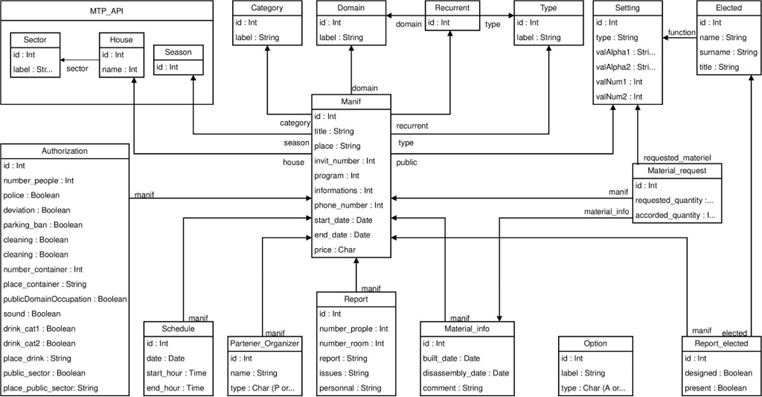
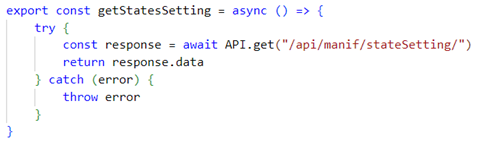
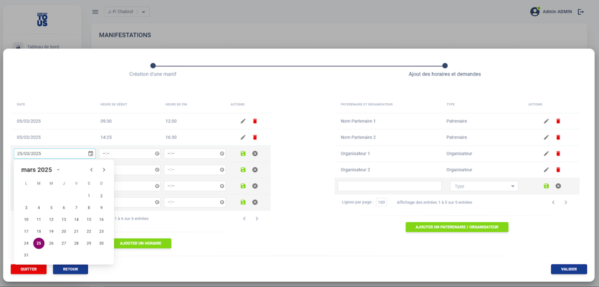

Projet "Maison Pour Tous"
Ce stage s'est déroulé au sein du Pôle Numérique et Données de Montpellier Méditerranée Métropole. J'ai participé au développement du nouveau logiciel de gestion des Maisons Pour Tous (MPT), structures municipales proposant des activités culturelles, sportives et sociales.
Le projet consistait à créer une application web moderne et ergonomique, remplaçant une ancienne plateforme obsolète. Il s’articulait autour de deux axes principaux :
Développement du back-end avec Django REST Framework
Création du front-end en React avec la bibliothèque Material-UI
Ma mission a été de concevoir, développer et intégrer la partie “manifestations” du projet. Cette fonctionnalité permet la gestion des événements : planification, matériel, autorisations, rapports, etc. Ce travail a été réalisé selon une méthodologie agile avec des sprints réguliers, en collaboration avec un développeur interne.
 Back-End
 Front-End

À propos du stage
Structure : Montpellier Méditerranée Métropole (PND)
Technologies : React, Django REST, PostgreSQL, Oracle, Material-UI
Outils : Figma, GitLab, Bordy, Postman, DataGrip, VsCode
Durée : 12 semaines, janvier - avril 2025
Méthodologie : Agile (Scrum)